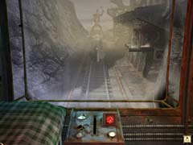
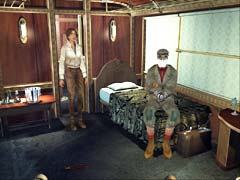

| 概要 | 地図 | |
| 淡いヒント集 | ヒント集 | 的確なヒント集 |
| 攻略最短ルート | Syberia 攻略へ |
| 地域選択へ | 次の段階へ >> |
コムコルツグラッド
|
陰気な町に到着して
草木が生い茂り、珍しい鳥が飛び交う美しい駅を後にしたあなたは、全くと言っていいほど対照的な荒れ果てた駅に到着する。しかも、困ったことにここでゼンマイが切れて機関車が止まってしまうのだ。空気も悪いし、気味が悪い。あなたもオスカーも早くここから立ち去るためにゼンマイを巻く方法を考えるのだが・・・。 ここであなたがやらなければならないことは、 ・機関車のゼンマイを巻く方法を探る ・機関車のゼンマイを巻く ・オスカーの救出 である。 
・駅に取り付けられたこの巨大な建物の中には、重要なアイテムがいくつかある。 ・その中の一つを見れば分かるが、ゼンマイを巻く機能を備えているのだ。 ・それでは、アイテムはどこか? ・ゼンマイはどうやって巻くのか?

・この制御パネルは、建物を動かすことができる。 ・一番奥はハシゴとつながり、一番前は機関車をまたぐ形になる。 ・では、中間は何があるのか? ・どうやって動かすのか? また、この装置でゼンマイを巻くことができるのか?

・不審人物が現れたら、オスカーを助けに行こう。 ・この人物は重要なアイテムを落としている。忘れずに拾っておこう。 ・オスカーに犯人の姿を聞いてもいいが、錯乱状態の彼の証言は役に立つだろうか? |
| 地域選択へ | 次の段階へ >> |
| 概要 | 地図 | |
| 淡いヒント集 | ヒント集 | 的確なヒント集 |
| 攻略最短ルート | Syberia 攻略へ |
Syberia
| 目次へ戻る | ページの上部へ |